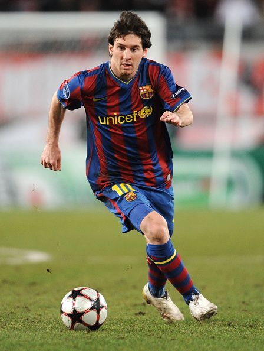
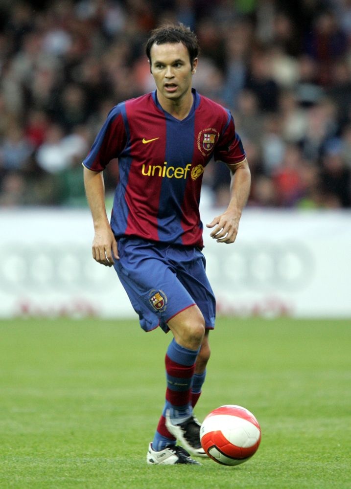
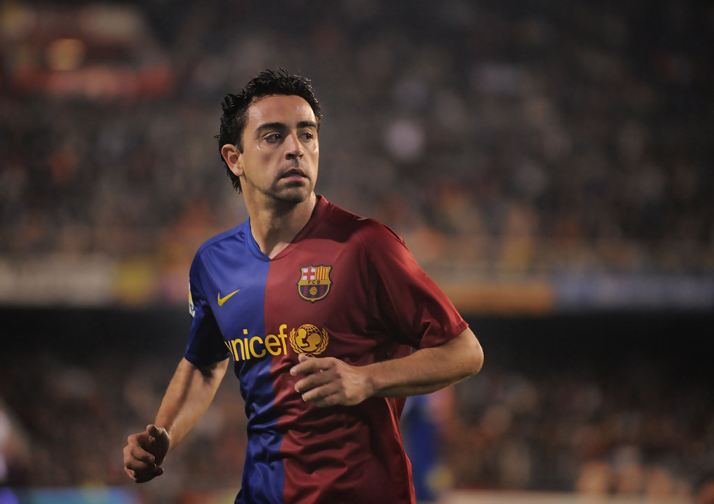

Lionel MESSI- 2010
- L'art de déstabiliser
En 2010,
Lionel Messi
inscrit son nom pour la deuxième fois de suite au palmarès du Ballon d'Or France Football.
Nationalité : Argentine
Né le 24 juin 1987, à Rosario (Argentine)
Taille : 1,69
Poids : 67 kg
Poste : attaquant
Clubs : Newell's Old Boys (1995-2000), FC Barcelone (depuis juillet 2000)
Palmarès : Ligue des champions 2006, 2009 et 2011; Coupe du monde des clubs 2009 ; Supercoupe d'Europe 2009 et 2011 ; Championnat d'Espagne 2005, 2006, 2009, 2010 et 2011 ; Coupe d'Espagne 2009 ; Supercoupe d'Espagne 2005, 2006, 2009, 2010 et 2011 ; Tournoi olympique 2008 ; Championnat du monde des 20 ans 2005
Bilan en club : 797 matchs, 597 buts
Bilan en équipe d'Argentine : 62 sélections A, 17 buts
Bilan en phase finale de Coupe du monde : 2 participations (2006, 2010), 8 matches, 1 but
Palmarès au Ballon d'Or : vainqueur en 2009, 2010, 2011, 2012, 2015
Classement du Ballon d’Or France Football 2010 :

Lionel Messi (Argentine / FC Barcelone)

Andrés Iniesta (Espagne / FC Barcelone)

Xavi (Espagne / FC Barcelone)
Retour à l'accueil
 Lionel MESSI- 2010
Lionel MESSI- 2010